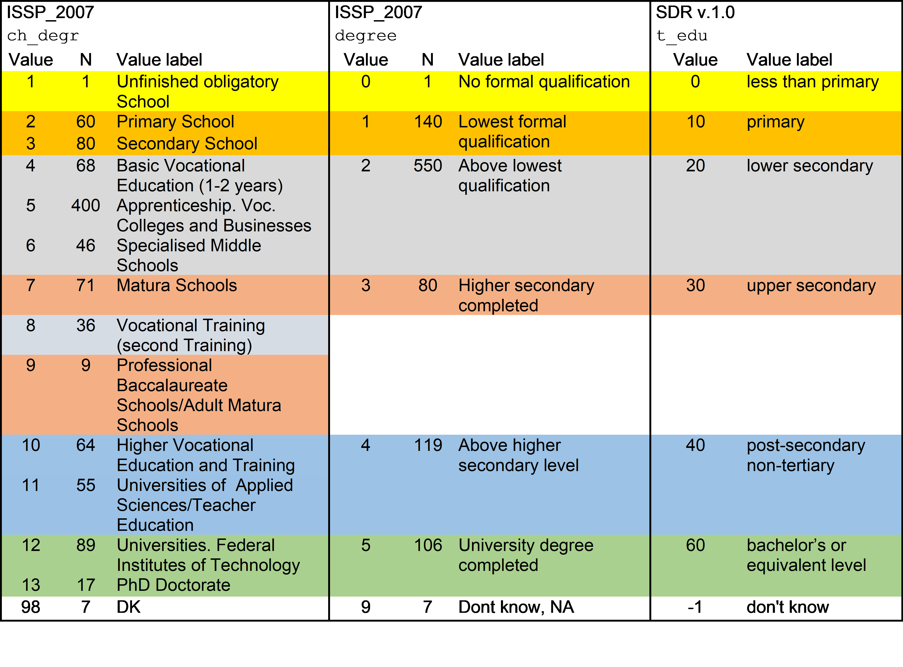
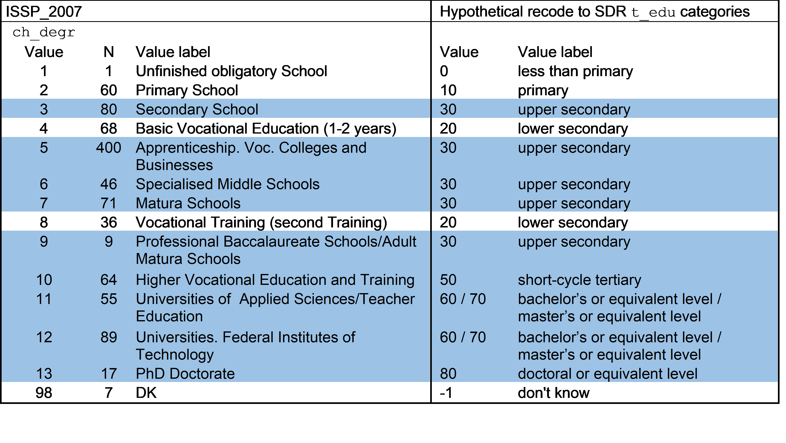

with Przemek Powałko
General population surveys with representative samples should have a similar education structure as shown by data from administrative sources, especially if survey weights are used. In this post we compare sample aggregates from 15 cross-national survey projects (including the European Social Survey, the World Values Survey and the European Values Study, and others) from the Survey Data Recycling database with educational attainment statistics from the OECD. We find a strong positive correlation between the two education variables, with some interesting deviations that we start to investigate. The data are available for visualization and download via this Shiny app.
The Survey Data Recycling dataset (SDR) version 1 includes selected harmonized variables from 22 cross-national survey projects, including measures of educational attainment - the highest level of education completed by the respondent. SDR only includes surveys that are intended as representative for entire adult populations (for other selection criteria see here, for more information about SDR and the data see the project website or this post). For general population surveys based on representative samples one would expect survey aggregates of educational attainment to closely track educational attainment measures from non-survey sources. In this post I compare shares of individuals with at least upper secondary education in SDR surveys to OECD data.
Educational attainment data
Data on the education structure of the adult population (instead of gross or net enrollment ratios) are not that easy to get. OECD provides data on the shares of populations by educational attainment in the Educational attainment and labour-force status database, code EAG_NEAC. This database includes the indicator “Share of population by educational attainment” (NEAC_SHARE_EA), which is available for several education levels and for different year ranges. I chose “At least upper secondary education” (L3T8) and the age range 25-64 (Y25T64).
The SDR project harmonized selected variables on political attitudes, behavior, and basic sociodemographics, from 22 cross-national survey projects covering 142 countries/territories between 1966 and 2013. From the SDR v.1 dataset I selected only whole country samples (i.e., excluding split-ups like West and East Germany or Flanders and Wallonia). For calculating shares of samples with at least upper secondary education I only used the target variable “Education level” (t_edu), not “Schooling years” (t_school_yrs), which is also available in the SDR v.1 dataset. I used respondents in the 25-64 age range and applied calibrated case weights (t_weight_l1u_2). More information about how these variables were constructed is available in the SDR documentation.
Respondents with at least upper secondary education were identified with the following condition:
(t_edu == 30 & c_edu_incomplete == 0) | (t_edu > 30 & t_edu < 90),
where t_edu (the harmonized “education level” target variable) takes the following values:
0 = less than primary
10 = primary
20 = lower secondary
30 = upper secondary
40 = post-secondary non-tertiary
50 = short-cycle tertiary
60 = bachelor’s or equivalent level
70 = master’s or equivalent level
80 = doctoral or equivalent level
90 = not elsewhere classified
and c_edu_incomplete is a flag indicating whether the given level of education has been completed (c_edu_incomplete == 0) or not (c_edu_incomplete == 1).
After matching the SDR v.1 and OECD datasets (and losing some cases on both sides) I ended up with 542 cases (national samples) from 15 projects: Asian Barometer (ABS), Afrobarometer (AFB), Americas Barometer (AMB), Asia-Europe Survey (ASES), Consolidation and Democracy in Central Eastern Europe (CDCEE), Comparative National Elections Project (CNEP), European Quality of Life Survey (EQLS), European Social Survey (ESS,) European Values Study (EVS), International Social Justice Project (ISJP), International Social Survey Programme (ISSP), Latinobarometro (LB), Life in Transition Survey (LITS), New Baltic Barometer (NBB), and the World Values Survey (WVS), and for 38 countries (that the OECD dataset only has information for a limited number of countries).
OECD data
Let’s start with the OECD data. The function get_datasets from the oecd package gets the list of available datasets. search_dataset searches for keywords among the available datasets.
The Educational attainment and labour-force status database has the code NEAC_SHARE_EA. With this code, the database can be downloaded with the get_dataset function.
Note: The entire database is huge and takes several minutes to download. According to the oecd package instructions, it is possible to specify a filter in get_dataset. This would be great, since I only need a small subset of the data, but unfortunately I haven’t been able to get the filter to work.
After downloading the database I select the subset I’m interested in:
1. the indicator “Share of population by educational attainment” (NEAC_SHARE_EA),
2. the education level measured “At least upper secondary education” (L3T8),
3. year range excluding “Latest available year” (code 9999),
4. the type of the measure VALUE (as opposed to standard error, SE),
5. both sexes,
6. age range of 25-64 (Y25T64),
7. only individual countries, i.e. excluding country groups such as the G20 or the OECD average.
But first, all the packages:
library(OECD) # getting OECD data
library(dataverse) # getting data from Dataverse
library(tidyverse) # cleaning and reshaping data
library(countrycode) # switching between country codes
library(ggplot2) # plots
library(knitr) # for pretty tables (kables)
library(kableExtra) # to customize tables (kables)dataset_list <- get_datasets()
search_dataset("education", data = dataset_list)
dataset <- "EAG_NEAC"
oecd <- get_dataset(dataset = dataset) %>%
filter(INDICATOR == "NEAC_SHARE_EA",
ISC11A == "L3T8",
obsTime != "9999",
MEASURE == "VALUE",
SEX == "T",
AGE == "Y25T64",
!COUNTRY %in% c("E22", "OAVG", "G20", "NMEC")) %>%
mutate(iso3c = COUNTRY, year = as.numeric(obsTime)) %>%
select(iso3c, year, obsValue)SDR data
The SDR Master File, which contains the harmonized individual-level survey variables, can be downloaded from Dataverse to R with the the dataverse package. The stata version of the file has the id = 3006244, a parameter in the get_file function. The data file is pretty large, so it takes a while to download.
master.raw <- get_file(3006244)
tmp <- tempfile(fileext = ".dta")
writeBin(as.vector(master.raw), tmp)
master <- haven::read_dta(tmp)Cleaning and merging SDR and OECD data
- Filter the SDR Master File to include only respondents aged between 25 and 64,
- using the “Education level” variable (
t_edu) create a boolean variable (hs) indicating whether the respondent completed upper secondary education, - group by national survey (
t_survey_name,t_survey_edition,t_country_l1u,t_country_set), - calculate weighted proportions of the
hsvariable by national sample -mean_hs, - calculate the proportion of missing values in the
t_eduvariable, - filter surveys for which
mean_hsis available and which cover whole country samples (as opposed to split-country samples, such as West and East Germany or Wallonia and Flanders), - covert SDR country codes from ISO2 to ISO3 (to match with OECD data),
- merge the SDR data with the OECD data on the country code and year,
- Construct a flag for survey proportion less than half of the OECD proportion,
- filter out cases with missing values.
merge <- master %>% filter(t_age >= 25 & t_age <= 64) %>%
mutate(hs = ((t_edu == 30 & c_edu_incomplete == 0) |
(t_edu > 30 & t_edu < 90)) ) %>%
group_by(t_survey_name, t_survey_edition, t_country_l1u, t_country_set) %>%
summarise(mean_hs = 100 * weighted.mean(hs, t_weight_l1u_2, na.rm = TRUE),
year = mean(t_country_year),
prop_edu_mis = mean(is.na(t_edu) | t_edu == 90)) %>%
filter(!is.na(mean_hs), nchar(t_country_l1u) == 2) %>%
mutate(iso2c = substr(t_country_l1u, 1, 2),
iso3c = countrycode(iso2c, 'iso2c', 'iso3c'),
continent = countrycode(iso2c, 'iso2c', 'continent')) %>%
inner_join(oecd, by = c("iso3c", "year")) %>%
mutate(off = (mean_hs < obsValue * 0.5 | mean_hs * 0.5 > obsValue )) %>%
filter(!is.na(obsValue))Results
The correlation (Pearson’s r) between the SDR percentage of respondents with at least upper secondary education and the corresponding OECD share is 0.67. The scatter plot in Figure 1 visualizes this association. While most of the samples are relatively close to the 45-degree line (as expected), there is a worrying group of observations with survey proportions substantially lower than the proportions from OECD data. Red points indicate that the survey proportion is less than half of the OECD proportion (the 50 percent threshold is of course arbitrary).
ggplot(merge, aes(x=obsValue, y=mean_hs, col = off)) + geom_point(show.legend=F) +
scale_color_manual(values=c("black", "red")) +
ggtitle("Figure 1: Educational attainment from SDR v.1 and OECD") +
xlab("OECD: % of population with at least upper secondary education") +
ylab("SDR: % of population with at least upper secondary education") +
xlim(0,100) + ylim(0,100) +
geom_abline(intercept = 0, slope = 1)
Figure 2 presents separate plots for each survey project, showing that most of the problematic surveys are in the International Social Survey Programme (ISSP), but also in ASES, CDCEE, EVS, and WVS. This Shiny app enables protting the data by survey projects and makes available the data: https://mkolczynska.shinyapps.io/sdr_oecd_education/.
ggplot(merge, aes(x=obsValue, y=mean_hs, col = off)) + geom_point(show.legend=F) +
scale_color_manual(values=c("black", "red")) +
ggtitle("Figure 2: Educational attainment from SDR v.1 and OECD by project") +
xlab("OECD: % of population with at least upper secondary education") +
ylab("SDR: % of population with at least upper secondary education") +
xlim(0,100) + ylim(0,100) +
geom_abline(intercept = 0, slope = 1) +
facet_wrap("t_survey_name")
The curious case of ISSP Switzerland
ISSP surveys in Switzerland are a particularly interesting case. As shown in Table 1 below, the time series starts with survey proportions of respondents with at least upper secondary education (column “SDR % HS+”) of around 90% in 1996, drops to around 40% in 1998, stays low until 2010, and then increases back to 85% in 2011. Note that only selected waves of ISSP are included in SDR v.1. Also note that survey proportions from 2006 and 2007, and from 2008 and 2009 are identical; this is because these two waves were carried out together on the same sample.
merge %>% filter(t_survey_name == "ISSP" & t_country_l1u == "CH") %>%
arrange(t_survey_edition) %>% select(1,2,3,5,10) %>%
kable(digits = 3, align=c("c", "c", "c", "c"),
caption = "Educational attainment data from ISSP Switzerland and the OECD",
col.names = c("Project", "Wave", "Country", "SDR % HS+", "OECD % HS+")) %>%
kable_styling(full_width = F, position = "left") %>%
column_spec(1:5, width = "10em")| Project | Wave | Country | SDR % HS+ | OECD % HS+ |
|---|---|---|---|---|
| ISSP | 1996 | CH | 89.216 | 83.723 |
| ISSP | 1998 | CH | 38.227 | 83.878 |
| ISSP | 2004 | CH | 39.916 | 85.247 |
| ISSP | 2006 | CH | 34.297 | 85.958 |
| ISSP | 2007 | CH | 34.297 | 85.958 |
| ISSP | 2008 | CH | 37.575 | 86.808 |
| ISSP | 2009 | CH | 37.575 | 86.808 |
| ISSP | 2010 | CH | 40.241 | 84.823 |
| ISSP | 2011 | CH | 84.458 | 84.823 |
Further investigation required digging into the original data and documentation, which benefitted from the help of Przemek. It turns out that some ISSP waves have two variables capturing respondent’s education level: one is country-specific and the other is recoded to a common scheme across countries by ISSP. For example, in ISSP/2007, the country-specific variable for Switzerland (ch_degr) has 14 categories (including one for missing values). The degree variable is the recoded one and has 7 categories (also including one for missing values). The frequencies in both variables are nice enough to make a relatively safe bet as to how ch_degr was mapped onto degree by the ISSP team.
Przemek and I checked the SDR v.1 documentation and the code used to harmonize education variables from ISSP. It turns out that the source variable used for harmonization if ISSP/2007/Switzerland was the recoded degree variable. The scheme in Table 2 shows how the three variables are related.
degree, ch_degr, t_edu
It seems that the problem lies in the recoding from ch_degr to degree, especially in the value labels “Lowest formal qualification”, which suggests primary school completion, as it was coded in SDR. Meanwhile the category “Lowest formal qualification” in degree includes both “Primary school” and “Secondary school” from ch_degr, which would be assigned different ISCED codes. As a consequence of the misclassification of “Lowest formal qualification”, “Above lowest qualification” was understood as levels above primary, i.e., lower secondary, but not necessarily completed upper secondary.
An alternative (hypothetical) mapping presented in Table 3 uses the country-specific ch_degr variable as the source and maps it to categories of SDR’s t_edu. In this scenario all the categories highlighted in blue would be assigned target codes corresponding to upper secondary education or more, resulting in the share of respondents with at least upper secondary education of 86%, i.e., matching the OECD value.

Data dictionaries of the source variables for t_edu (i.e., the non-country-specific education variables) from other ISSP waves (see Appendix) show that the “Lowest formal qualification” category is present in all those ISSP waves (2004, 2006, 2007, 2008, 2009, 2010), where ca. 40% of the Swiss sample in SDR has at least upper secondary education. The earliest and latest wave of ISSP (1996, 2011) have different sets of response categories in the recoded education variable, which did not result in such errors when harmonizing them in SDR. The relevant variable in ISSP/1998 does not have the “Lowest formal qualification” or “Above lowest qualification” categories, and yet the share of respondents with at least upper secondary education based on the harmonized t_edu variable in SDR is less than 40. This requires further investigation.
Conclusion
Comparing the distribution of survey variables to data from non-survey sources can help identify errors in the recoding or harmonization of survey data and potentially reveal other surprises. A simple comparison of sample proportions of respondents with at least upper secondary education from surveys in the SDR v.1 dataset to analogous data from OECD led to the identification of samples with large differences between these two measurements. The examination of data and documentation from ISSP/Switzerland suggests that errors might have originated from the conversion of country-specific education variables to an education variable with uniform coding for the whole ISSP wave. Investigations of other surveys and projects can provide new insight.
This situation also proves the importance of clearly identifying the source data and variables and all transformation in harmonization projects, so that users can trace back the error to its source – in the case of educational attainment in ISSP/Switzerland it seems that the problem is not in the original measurement, but in the subsequent transformations.
Appendix
Data dictionary of source variables for t_edu from ISSP (selected waves).
ISSP_1996 v205
R: Education II: categories
1|None;still at school,uni
2|Incpl primary
3|Primary compl
4|Incpl secondary
5|Secondary compl
6|Semi-higher,Incpl uni.
7|University compl
99|NA, others
ISSP_1998 v205
R: Education II: categories
1|None;still at school
2|Incpl primary
3|Primary compl
4|Incpl secondary
5|Secondary compl
6|Semi-higher,incompl uni,other
7|University compl
99|NA
ISSP_2004 v205
R: Education II-highest education level (DEGREE)
0|No formal qualification
1|Lowest formal qualification
2|Above lowest qualification
3|Higher secondary completed
4|Above higher sec level,other educ
5|University degree completed
8|Don't know
9|NA
ISSP_2006 DEGREE
R: Education II-highest education level
0|No formal qualification, incomplete primary
1|Lowest formal qualification
2|Above lowest qualification
3|Higher secondary completed
4|Above higher secondary level,other qualification
5|University degree completed, graduate studies
8|Dont know
9|NA
ISSP_2007 DEGREE
R: Education II-highest education level
0|No formal qualification
1|Lowest formal qualification
2|Above lowest qualification
3|Higher secondary completed
4|Above higher secondary level
5|University degree completed
9|Dont know, NA
ISSP_2008 DEGREE
R: Education II-highest education level
0|No formal qualification
1|Lowest formal qualification
2|Above lowest qualification
3|Higher secondary completed
4|Above higher secondary level, others
5|University degree completed
8|Don't know
9|No answer
ISSP_2009 DEGREE
R: Education II-highest education level
0|No formal qualification
1|Lowest formal qualification
2|Above lowest qualification
3|Higher secondary completed
4|Above higher secondary level, other qualification
5|University degree completed
8|Dont know
9|NA
ISSP_2010 DEGREE
Education II: Highest education level: categories
0|No formal qualification
1|Lowest formal qualification
2|Intermediate secondary completed (qualifications above the lowest qualification)
3|Higher secondary completed (usual entry requirements for universities)
4|University degree incomplete (qualifications above higher secondary level)
5|University degree completed, BG: lower tertiary level, upper tertiary level
8|Don't know
9|No answer, other qualification, education
ISSP_2011 DEGREE
Highest completed education level: Categories for international comparison
0|No formal education
1|Primary school
2|Lower secondary (secondary completed does not allow entry to
3|Upper secondary (programs that allows entry to university
4|Post secondary, non-tertiary (other upper secondary programs
5|Lower level tertiary, first stage (also technical schools at
6|Upper level tertiary (Master, Dr.)
9|No answer